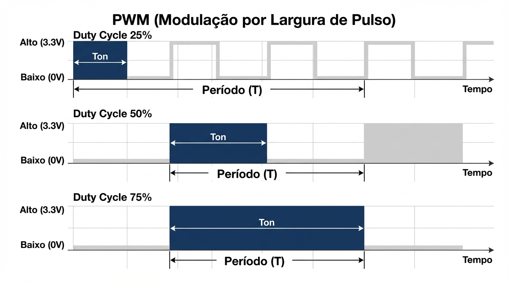

Faculdade de Tecnologia do Senac (FATESE)
Curso: Análise e Desenvolvimento de Sistemas
Aula 05 — Atuadores e PWM
Base teórica — Como funciona
PWM como processo
(liga/desliga rápido)
Ideia em 1 frase
O ESP32 alterna o pino entre 0V e 3,3V com alta frequência; o tempo em nível alto (Ton) define a energia média entregue.
Período (T)
Um ciclo completo do PWM (repete continuamente).
Ton
Tempo em que o pino fica em HIGH.
Duty
Duty (%) = Ton/T × 100
Por que parece “saída analógica”?
Muitos sistemas têm inércia (motor) ou integração humana (visão). Isso “suaviza” a comutação e você percebe a média da energia.
Onde entra no loop de controle
Sensor → ESP32 → Atuador
Entrada
ADC / botão / sensor
Lógica
mapear valor → duty
Saída
PWM → LED/motor
Diagrama do sinal
Ton varia; T se mantém. Isso altera o duty cycle.

Duty baixo
Menos energia média → LED mais fraco / motor mais lento.
Duty médio
“Meia força” com saída digital comutando rápido.
Duty alto
Mais energia média → mais brilho / maior velocidade.
Importante
PWM não muda a tensão do pino; ele muda o tempo ligado. O “analógico” é o efeito percebido na carga.
Conexão com a prática: o “LED respirando” nada mais é do que variar o duty cycle ao longo do tempo.
T
Ton
Duty